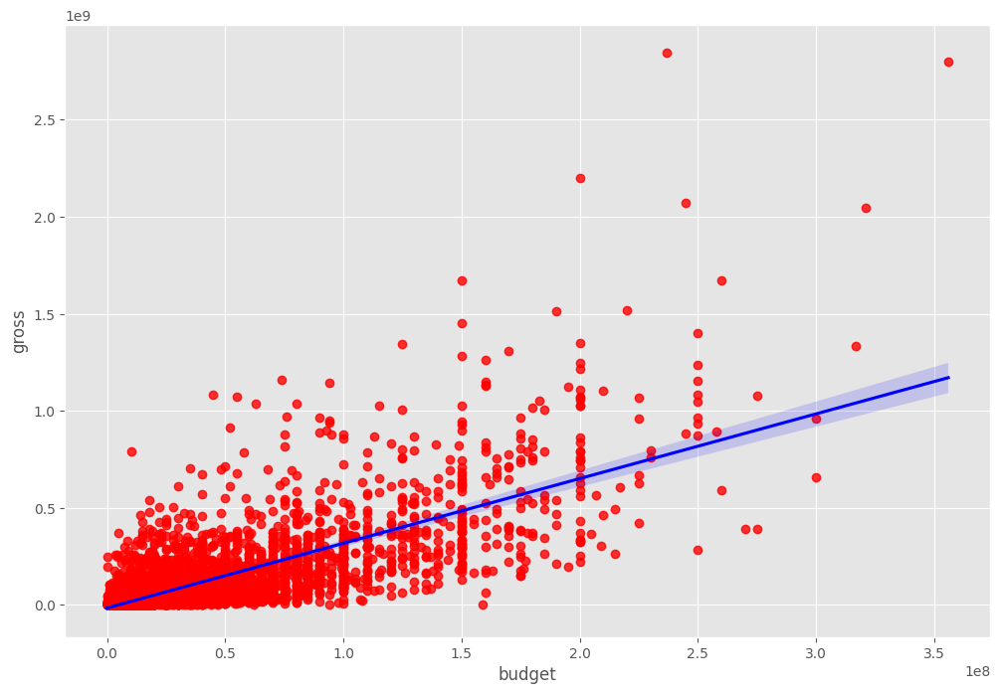

Movie Data Correlation Analysis
Python | EDA | Correlation | Visualization
Project File: View on GitHub
Project Overview
This project analyzes the correlation between various features of movies, such as budget, gross revenue, and user votes. The goal is to uncover statistical relationships that can inform future predictive models or investment strategies in the film industry.
Tools & Technologies Used
- Python (Pandas, NumPy): Data wrangling and correlation computation
- Seaborn & Matplotlib: Visualization of scatter plots and heatmaps
- Jupyter Notebook: Interactive analysis and report building
- CSV Files: Source format for movie data
- Basic EDA Techniques: Exploration of numeric relationships and trends
Key Insights
- Budget ↔ Gross Correlation: Strong correlation (r = 0.7402)
- Votes ↔ Gross Correlation: Moderate correlation (r = 0.6148)
- Higher budgets often translate to higher box office performance
- User votes are a useful proxy for popularity and correlate with revenue
Business Metrics
- Top Correlation: Budget ↔ Gross (r ≈ 0.74)
- Moderate Correlation: Votes ↔ Gross (r ≈ 0.61)
- Use Case: Useful for early-stage investment or marketing planning
Recommendations
- Budget Allocation: Allocate more funding to projects with strong marketing and wide audience appeal
- Marketing Strategy: Encourage early engagement and review activity to increase vote count
- Model Integration: Use these features in revenue prediction models to assist producers and distributors
Data Preparation Process
1. Data Collection & Import
- Loaded movie data from CSV into a Pandas DataFrame
- Included columns: budget, gross revenue, vote, etc.
2. Data Cleaning & Transformation
- Removed missing values and non-numeric entries
- Ensured correct data types for correlation analysis
3. Correlation Analysis
- Computed Pearson correlation coefficients using
.corr() - Visualized correlation matrix with Seaborn heatmap
- Identified strong positive relationships among numeric columns
Project Summary
Conducted a data-driven correlation study on movie features. Discovered that budget and vote count are both positively correlated with box office gross, offering valuable insights for predictive modeling and strategic planning in film production and distribution.